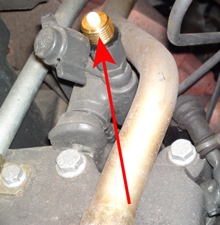
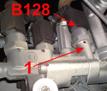

The purpose of the test is to clean the dosing unit if it cannot dose more than 250 ml during the subtest "Checking AdBlue dosing unit's dosing amount".
The dosing unit may only be cleaned if "Checking AdBlue dosing unit's dosing amount" is outside the reference value and with a max. pressure of 5.5 bar. If a higher pressure than 5.5 bar is used, the dosing unit may be damaged by the high pressure.
The test applies to:
Engine 541.9 i model: 930, 932, 933 934 with code (MS4) BlueTec 4 or (MS5) BlueTec 5.
Engine 542.9 i model: 930, 932, 934 with code (MS4) BlueTec 4 or (MS5) BlueTec 5.
Test conditions:
Parking brake applied.
Engine off.
Procedure:
Connect the test instrument to the diagnostics socket.
Tilt the cab according to the manufacturer's instructions.
Install a test outlet on the compressed air line's inlet to the dosing unit. See figure below!

Remove SCR compressed air sensor (B128). Fill the hole 1 with distilled water until it overflows. See figure below!

Install SCR compressed air sensor (B128).
Connect a suitable hose to the compressed air line's test outlet, fill with distilled water until a water column of 4 cm is created in the hose, hold the hose upright during the whole test so that the water flows straight down into the test outlet.
Connect a compressed air gun with suitable coupling to the hose that is connected to the test outlet.
Blow clean the dosing unit with a max. pressure of 5.5 bar until all water is gone.
Remove the test equipment.
Start the engine.
Start the test "Cleaning of dosing unit"
Check that the compressed air pressure is within the reference value 1.23-2.50 bar.
If the compressed air pressure is not within the reference value, repeat the cleaning procedure.
If the compressed air pressure is still not within the reference value, this may be due to a defective dosing unit and then it needs to be replaced.
The function is done.
If the function fails, check the test conditions and repair any faults.